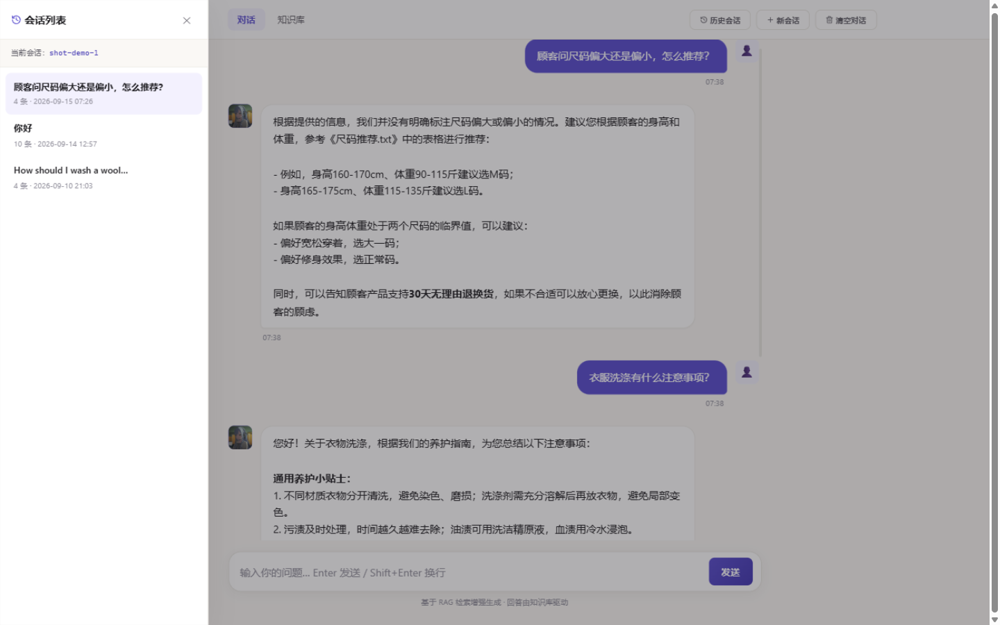
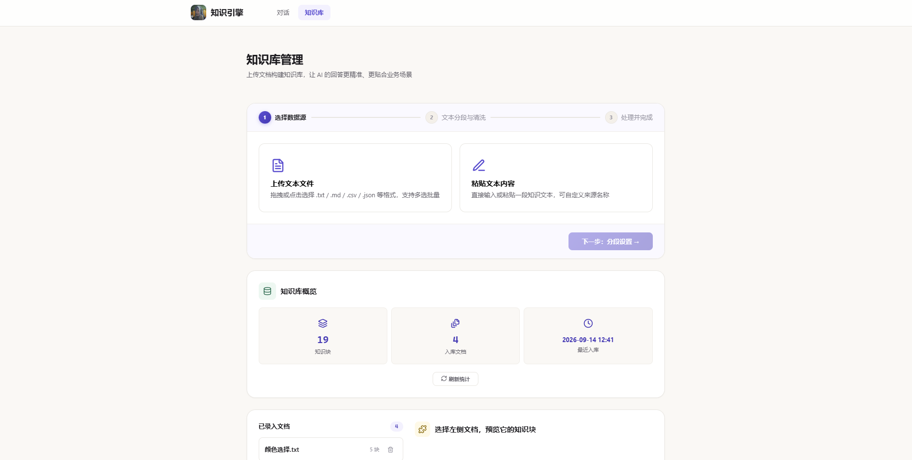

项目 01 · RAG 应用
智能知识库问答系统
上传文档自动入库，语义检索，流式逐字回答。
从课程原型出发，独立完成一次完整的工程化演进。
项目 01 · RAG 应用
上传文档自动入库，语义检索，流式逐字回答。
从课程原型出发，独立完成一次完整的工程化演进。
Overview
基于 LangChain + ChromaDB 的知识库问答应用。以服装售前客服为示例场景，知识库可替换为任意领域。
后端逐 token 生成，JSON 包装帧（修复文本含换行拆帧的隐患），前端 ReadableStream 增量渲染。首字延迟从"等整段"降到 1 秒内。
会话摘要接口 + 抽屉式列表：标题自动取首条提问、单条删除、记住上次会话。对话历史按会话持久化，刷新即恢复。
自建 16 题评估集，6 组参数两轮扫描。第二轮暴露异常信号，顺藤摸瓜定位嵌入兼容性 bug——实验不止回答"参数怎么定"，还揪出了看不见的底层问题。
三角验证定位 langchain 向第三方嵌入接口发送 token id 的兼容性问题（同文本向量余弦仅 0.29，修复后检索全对）；async 路由 ORM 静默失败；session_id 路径穿越双重校验。
Interface


🗂会话列表抽屉
📊知识库管理页Experiment
6 组 chunk 参数 × 16 题评估集 × 嵌入修复前后两轮对照
| chunk_size / overlap | 知识块数 | hit@1 · 修复前 | hit@1 · 修复后 |
|---|---|---|---|
| 100 / 30 | 58 | 31% | 100% |
| 200 / 50 | 26 | 25% | 100% |
| 300 / 0 | 15 | 62% | 100% |
| 300 / 50采用 | 15 | 69% | 100% |
| 500 / 50 | 9 | 31% | 100% |
| 800 / 100 | 7 | 62% | 100% |
| 300 / 50 · 英文模型对照 | 15 | — | 75% |
首轮实验里 25%~69% 的参数差异，全部是坏嵌入制造的伪信号——langchain 默认把文本转成 token id 发给第三方接口，向量语义早已失真。 三角验证（同文本对比 embed_query / embed_documents / 直连 API）定位根因，修复后六组配置全部满分： 检索系统的第一性问题是嵌入质量，不是调参。 完整报告与修复提交见 experiments/results.md。
Journey
每一步都对应仓库里的真实提交，欢迎翻 git 历史。